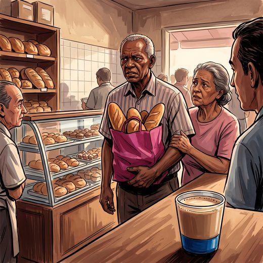

Ferramenta desta aula
Sintomas comportamentais. Roda no navegador, sem cadastro.
Consulta rápida à beira do leito
Condutas, doses e interações.
Referências da aula · 6
- Wittebrood C, Boban M, Cagnin A, et al. Pharmacotherapy for behavioural manifestations in frontotemporal dementia: an expert consensus from the European Reference Network for Rare Neurological Diseases (ERN-RND). Eur J Neurol. 2024;31(12):e16446. PMID 39447217. doi:10.1111/ene.16446.PubMedDOI
- Boeve BF, Boxer AL, Kumfor F, Pijnenburg Y, Rohrer JD. Advances and controversies in frontotemporal dementia: diagnosis, biomarkers, and therapeutic considerations. Lancet Neurol. 2022;21(3):258-72. PMID 35182511. doi:10.1016/S1474-4422(21)00341-0.PubMedDOI
- Lebert F, Stekke W, Hasenbroekx C, Pasquier F. Frontotemporal dementia: a randomised, controlled trial with trazodone. Dement Geriatr Cogn Disord. 2004;17(4):355-9. PMID 15178953. doi:10.1159/000077171.PubMedDOI
- Volkmer A, Rogalski E, Henry M, et al. Speech and language therapy approaches to managing primary progressive aphasia. Pract Neurol. 2020;20(2):154-61. PMID 31358572. doi:10.1136/practneurol-2018-001921.PubMedDOI
- Livingston G, Huntley J, Liu KY, et al. Dementia prevention, intervention, and care: 2024 report of the Lancet standing Commission. Lancet. 2024;404:572-628. PMID 39096926. doi:10.1016/S0140-6736(24)01296-0.PubMedDOI
- American Geriatrics Society 2023 updated AGS Beers Criteria for potentially inappropriate medication use in older adults. J Am Geriatr Soc. 2023;71(7):2052-81. PMID 37139824. doi:10.1111/jgs.18372.PubMedDOI
Documentos oficiais
Leis e publicações do Ministério da Saúde sobre o cuidado da pessoa idosa, de acesso livre.
Abrir os documentos